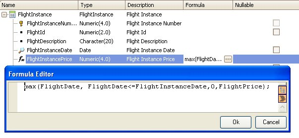

Max and Min are Aggregate Formulas. Syntax{Max | Min}( <expressionToBeMaxOrMin>, <aggregateCondition>, <defaultValue> , <returnedAttributeValue> ) [ if <triggeringCondition> ] where: <expressionToBeMaxOrMin> Is the expression whose resultant value will be maximized/minimized, among the records fulfilling the <aggregateCondition>. It may contain attributes (even formula attributes), constants and variables (variables are allowed only in inline formulas) <aggregateCondition> Is a combination of a search condition with a Data Selector invocation. Both parts are optional: [<SearchCondition>] [USING <DataSelector> '(' <Parameter>1, <Parameter>2, <Parameter>n ')'] <SearchCondition> Is the condition that records must verify to be considered in the aggregation. It may contain attributes, constants and variables (user variables are allowed only in inline formulas, GeneXus standard variables in global formulas and inline formulas). <defaultValue> Is the returned value when no records match the <aggregateCondition>. It is a constant and it is optional. <returnedAttributeValue> Attribute whose value is returned by the formula when it finds records that fulfill the <aggregateCondition> and after maximizing/minimizing the <expressionToBeMaxOrMin>. <triggeringCondition> Is the condition that determines if the formula must be triggered or not. It is optional. The only attributes allowed are those belonging to the contextual table (that the formula attribute would belong to if it were stored) and its extended. ExampleHaving the following two transactions: Flight to store the general information about flights (like its description and prices by date), and FlightInstance to store the actual information of a certain flight:
Flight {
FlightId*
FlightDescription
Prices
{ FlightDate*
FlightPrice }}
FlightInstance {
FlightInstanceNumber*
FlightId
FlightDescription
FlightInstanceDate
FlightInstancePrice = max(FlightDate, FlightDate <= FlightInstanceDate, 0, FlightPrice)}
Look at the following image, which shows the FlightInstancePrice attribute being defined as a Max global formula using the GeneXus formula editor:  The base table of the formula, that is, the navigated table in order to make the calculation is: FLIGHTPRICES. The formula has a context: the FLIGHTINSTANCE table, this means when the formula is triggered, we are positioned on that table. More precisely: on one of its records, with a certain FlightInstanceNumber value. Thus, at the moment the formula is going to be evaluated, it already knows all the FLIGHTINSTANCE table (and its extended) attributes for this record. Among them, FlightId and FlightInstanceDate. Therefore, not all the records that fulfill the explicit aggregate condition "FlightDate <= FlightInstanceDate" will be considered for the maximization, but only those that correspond to the flight, that is, the FlighId of the FLIGHTINSTANCE record. Thus, all records considered will verify, also: FLIGHTPRICES.FlightId = FLIGHTINSTANCE.FlightId In sum, the max formula will navigate the FLIGHTPRICES table filtering the records that verify the <aggregateCondition> (FlightDate <= FlightInstanceDate) and also applying the automatic filter inferred by GeneXus (FLIGHTINSTANCE.FlightId = FLIGHTPRICES.FlightId); then, for the selected records that fulfill both mentioned filters, the <expressionToBeMaxOrMin> will be maximized (this means that the record which has the FlightDate maximum value will be chosen) and the <returnedAttributeValue> associated to that record will be returned as the formula result (FlightPrice). If none record fulfill both filters, then 0 (the <defaultValue>) will be returned.
|
| Backlinks | |
| Aggregate Formulas | Toc:GeneXus - Table of contents |